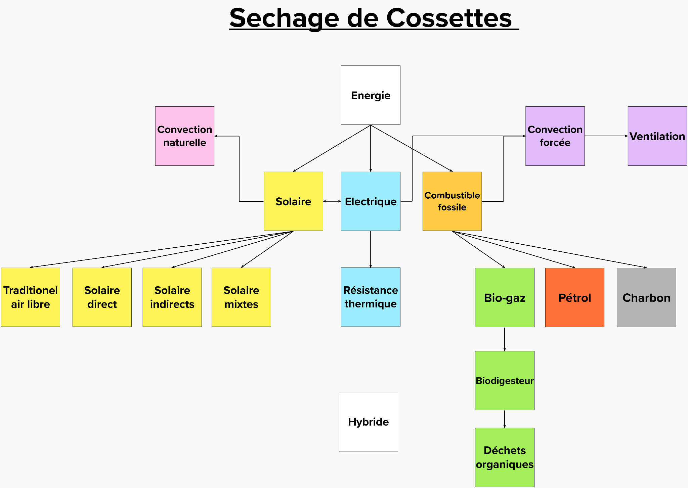

Séchage de cossettes de manioc à l’aide de biogaz et d’énergie solaire
2022
Auteurs: Jean-Baptiste Denoël, Jhodi Avizara, Maud Toussaint Schurmans, Margaux Reckelbus
Introduction
Le cours Ingénieux Sud est un dispositif pédagogique unique qui favorise la coopération entre étudiants d’universités du Nord et du Sud. L’objectif est de réfléchir collectivement à des solutions pragmatiques, technologiques et durables pour répondre à des problématiques réelles, avant de se rendre sur place pour un stage d’un mois afin de les mettre en œuvre. Ce cours vise à promouvoir l’échange et à renforcer les capacités des étudiants et des enseignants afin qu’ils prennent des décisions favorables à l’intégrité environnementale, à la viabilité économique et à une société plus juste.
Pour notre groupe, composé d’étudiants en ingénierie civile, biologie et sciences de la population du développement, la sélection pour ce projet a représenté une opportunité essentielle. Il nous a permis de confronter nos connaissances académiques à un cadre concret, de travailler sur un problème réel sans précédent dans notre cursus, et de gérer un projet de A à Z. Au-delà de l’aspect technique, ce cours a été un vecteur de rencontre et de partage interculturel, enrichissant par la diversité de nos horizons et la découverte d’une autre réalité.
Notre équipe a été sélectionnée pour collaborer avec six étudiants en génie civil de l’Université de Kinshasa. Nous avons rejoint l’été suivant les étudiants de Kinshasa en République Démocratique du Congo pour finaliser le projet. Celui-ci prend racine dans le village de Mbankana, situé à trois heures de route de la capitale, Kinshasa. Le défi consiste à mettre au point un moyen de séchage pour les cossettes de manioc en exploitant l’énergie solaire et le biogaz. Cet enjeu est majeur car le manioc occupe une place centrale dans l’alimentation africaine, étant la cinquième plante la plus consommée au monde. Le séchage est une étape cruciale de son traitement : le manioc frais contient du cyanure, principalement dans ses pelures, qu’il est impératif d’éliminer par rinçage et séchage pour rendre le tubercule comestible et conservable. Les bénéficiaires directs de cette innovation sont les habitants du village de Mbankana.
Ce portfolio détaille les différentes étapes de recherche, de conception et de réflexion entreprises pour comprendre et réaliser les enjeux de ce projet.
Activités réalisées pendant l’année
Avant le départ sur le terrain, le groupe a mené plusieurs activités préparatoires essentielles à la réussite du projet. La première a consisté en l’organisation de ventes de cookies et de truffes au chocolat faits maison, afin de récolter des fonds pour le financement du stage et de l’équipement. Parallèlement, une prise de contact structurée a été établie avec les étudiants et les professeurs de l’Université de Kinshasa (UNIKIN). Ces échanges ont permis de définir les besoins locaux, d’harmoniser les approches techniques et de préparer la logistique du stage sur place.
Étude globale de la problématique
Contexte historique et politique
L’histoire de la République Démocratique du Congo est indissociable de sa colonisation belge. Le territoire, auparavant possession personnelle du Roi Léopold II depuis 1885, est devenu une colonie belge en 1908. Durant cette période, le peuple local a subi l’esclavage, l’exploitation et de nombreuses abominations. L’indépendance a été proclamée le 30 juin 1960, marquant la naissance de la République du Congo, rebaptisée République Démocratique du Congo quatre ans plus tard. Aujourd’hui, le pays est dirigé par le président Félix Tshisekedi, élu en décembre 2018.
Approche économique
La production de manioc en RDC est évaluée à 15 millions de tonnes par an, faisant du pays le troisième producteur mondial. Cette culture est fondamentale pour l’économie nationale. La consommation annuelle moyenne par habitant atteint 353 kg, soit la plus élevée au monde, ce qui souligne l’importance économique et sociale du manioc.
Contexte environnemental
La RDC, traversée par l’équateur, possède deux climats : équatorial au centre et tropical au nord et au sud. Le village de Mbankana se situe dans une zone à climat tropical. Les conditions de séchage y sont loin d’être idéales toute l’année. Pendant la saison des pluies, qui s’étend d’octobre à mai, les précipitations peuvent atteindre 255 mm par mois avec un taux d’humidité moyen de 85,21 %. L’ensoleillement est alors fortement limité, parfois à seulement 4 heures par jour. Ces conditions entraînent souvent un séchage incomplet, augmentant les risques de toxicité résiduelle due aux cyanures.
État de l’art de la thématique

Le projet vise à déshydrater les cossettes de manioc en transformant l’eau liquide en vapeur. Le choix de l’énergie est donc central. Les techniques actuelles de séchage incluent le séchage à l’air libre, les séchoirs solaires directs (bacs exposés au soleil) et indirects (circulation d’air chaud sans exposition directe), ainsi que les systèmes à combustion (bois, charbon, gaz) ou électriques (résistances, photovoltaïques).
L’efficacité du séchage peut être améliorée par l’ajout de ventilation naturelle ou mécanique pour créer une convection forcée. Une solution prometteuse est le séchage hybride, qui combine l’énergie solaire avec une autre source d’énergie (comme le biogaz) pour permettre un séchage continu, de jour comme de nuit, et par mauvais temps. Notre groupe s’oriente actuellement vers cette solution hybride, imaginant un four utilisant l’énergie solaire naturelle et la combustion de biogaz.
.png)
Approche locale-globale
Le séchage des aliments est une problématique globale, présente dans le monde entier depuis l’aube de la civilisation. En Belgique, des entreprises comme Supersec commercialisent des produits secs (champignons, fruits, algues) obtenus par déshydratation, illustrant une approche locale de ce savoir-faire universel.
Sur le plan énergétique, la Belgique ne dispose pas d’un potentiel solaire exceptionnel, avec une irradiation horizontale de 1000 à 1100 kWh/m² par an, contre 1800 kWh/m² en Andalousie. Cependant, elle dispose d’une expertise en biométhanisation. L’Europe concentre la moitié de la production mondiale de biogaz, avec l’Allemagne en tête. La Belgique compte 16 unités de méthanisation par million d’habitants, produisant du gaz issu majoritairement de la production agricole. Un exemple notable est l’unité de Surice (Namur), qui produit 700 kWh/an de chaleur et électricité pour plusieurs ménages. Cette expertise européenne en biométhanisation pourrait être transférée et adaptée au contexte congolais.
Approche scientifique
Le projet repose sur le développement d’un système de séchage hybride pour les cossettes de manioc. Nos recherches ont montré que le séchage à l’air libre nécessite au moins 10 heures d’ensoleillement pour atteindre une teneur en eau de 10-11 %, condition sine qua non pour une conservation durable. En conditions idéales, cela prend 2 à 4 jours, mais les pluies en RDC rendent ce processus aléatoire et dangereux.
Nous avons étudié différentes techniques, notamment les fours à combustibles (en veillant à éviter le contact du manioc avec la fumée pour ne pas altérer le goût) et divers prototypes de séchoirs solaires. L’incertitude principale concernait la production locale de biogaz, dont nous n’avions pas encore suffisamment d’informations techniques.
Pour étayer notre démarche, nous nous sommes appuyés sur trois sources scientifiques majeures : 1. Une étude de 2003 par une chercheuse de l’Université de Bangui (RCA) sur l’amélioration des techniques de transformation du manioc en cossettes, comparant les taux de cyanure selon les méthodes. 2. Une étude expérimentale de 2009 par des chercheurs ivoiriens sur un grenier séchoir solaire à convection naturelle, appliquée au cacao et au manioc, utilisant des toitures en tôle d’aluminium. 3. Le livre de référence “Sécher des produits alimentaires. Techniques, procédés, équipements” (GRET, 1955), dirigé par Jean-François Rozis, qui fournit les bases théoriques pour la construction de séchoirs et l’analyse des procédés de déshydratation.
Ces documents nous ont permis de construire un état de l’art solide et de définir les paramètres techniques de notre solution hybride.
Bibliographie
- Chouicha, S., Boubekri, A., Bouguettaia, H., & Mennouche, D. (2015). Séchage et qualité des dattes Deglet-Nour réhumidifiées par utilisation d’un séchoir solaire hybride. Laboratoire de Développement des Énergies Nouvelles et Renouvelables dans les Zones Arides et sahariennes (L.E.N.R.E.Z.A.), Université UKMO Ouargla, Algérie.
- CADIM. Centre d’Appui au Développement Intégral Mbankana. Disponible sur : https://cadim-rdc.org/
- UNESCO. Library Catalog. Disponible sur : http://www.nzdl.org/cgi-bin/library?e=d-00000-00---off-0unesco--00-0----0-10-0---0---0direct-10---4-------0-1l--11-en-50---20-about---00-0-1-00-0--4----0-0-11-10-0utfZz-8-00&cl=CL2.4&d=HASH01f9bd2054c2aae11bff6149.7.3.1>=1
- Wikipedia. Congo belge. Disponible sur : https://fr.wikipedia.org/wiki/Congo_belge
- AfriqueScience. PDF sur le manioc. Disponible sur : http://www.afriquescience.net/PDF/15/2/8.pdf
- HAL. Étude expérimentale d’un grenier séchoir solaire. Disponible sur : https://hal.archives-ouvertes.fr/hal-00142572/document
- Solagro. Utilisation rationnelle séchage fourrages. Disponible sur : https://sda.revuesonline.com/gratuit/SDA20_4-5_413-432.pdf
- AJOL. Article sur la transformation du manioc. Disponible sur : https://www.ajol.info/index.php/jspi/article/view/67953
- Déshydrateur-Séchoir. Histoire de la déshydratation. Disponible sur : https://www.deshydrateur-sechoir.fr/un-peu-dhistoire/histoire-de-la-deshydratation/
- Wikipedia. Agriculture en République démocratique du Congo. Disponible sur : https://fr.wikipedia.org/wiki/Agriculture_en_r%C3%A9publique_d%C3%A9mocratique_du_Congo
- Supersec. À propos. Disponible sur : https://www.supersec.com/a-propos/
- Climats et Voyages. Climat en RDC. Disponible sur : https://www.climatsetvoyages.com/climat/republique-democratique-congo
- Wikipedia. Énergie solaire en Europe. Disponible sur : https://fr.wikipedia.org/wiki/%C3%89nergie_solaire_en_Europe#Production_d’%C3%A9lectricit%C3%A9
- InfoMetha. État des lieux de la méthanisation en Europe. Disponible sur : https://www.infometha.org/effets-socio-economiques/etat-des-lieux-de-la-methanisation-en-europe
- Wikipedia. Biogaz. Disponible sur : https://fr.wikipedia.org/wiki/Biogaz#Production
- Énergie Wallonie. Projet témoin biométhanisation Surice. Disponible sur : https://energie.wallonie.be/servlet/Repository/valbiom-projet-temoin-biomethanisation-surice.pdf?ID=42195&saveFile=true
Articles utilisés pour l’approche scientifique : * Étude de l’Université de Bangui (2003) sur les techniques de transformation. * Résumé du livre “Sécher des produits alimentaires. Techniques, procédés, équipements” (GRET, 1955), disponible sur : https://www.gret.org/publication/secher-des-produits-alimentaires/ * Étude ivoirienne (2009) sur le séchoir solaire à convection naturelle.